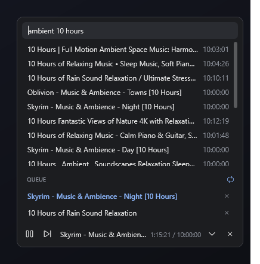

A tiny player that sits in the corner of your screen and streams just the audio of those 10-hour ambience videos.

Built for one job: put on a long soundscape, maybe queue one or two more, and forget about it.
No video, no thumbnails to scroll past. It streams just the audio, so it's light on bandwidth and CPU.
A slim bar above the taskbar. Expand it to search, collapse it to get out of the way. It also hides to the tray.
Your keyboard's play/pause and next keys, headset buttons and the Windows media flyout all control it.
Plain-text results, just titles and lengths. Star the tracks you keep coming back to, and they stay pinned at the bottom of the panel.
It remembers your queue, track and position. If YouTube's stream link expires during a 10-hour track, it gets a fresh one and keeps going.
One .exe, nothing to install. When a new version is out, click Update in the tray menu. It downloads and verifies the new version, then restarts and keeps playing.
AmbientBar uses yt-dlp to find and stream audio.
Grab AmbientBar.exe and put it anywhere, e.g. your Desktop or Startup folder.
Recommended: winget install yt-dlp.yt-dlp. If you skip this, AmbientBar fetches its own copy on first search.
Click the bar, type something like “rain 10 hours”, press Enter and click a result.
Everything is one click away.
^, type, press EnterShort answers.
No. AmbientBar doesn't sign in to YouTube. It streams the audio through yt-dlp.
The exe isn't code-signed. Click More info → Run anyway. The source and the build workflow that produced the exe are both on GitHub.
YouTube changes things often. Update yt-dlp with winget upgrade yt-dlp.yt-dlp. If AmbientBar is using its own copy, it updates that copy weekly.
In %APPDATA%\AmbientBar\state.json. Delete it to start fresh.
Press Win+R, type shell:startup, and put a shortcut to AmbientBar.exe in that folder.